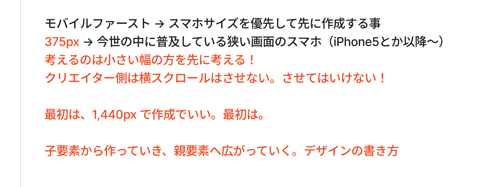
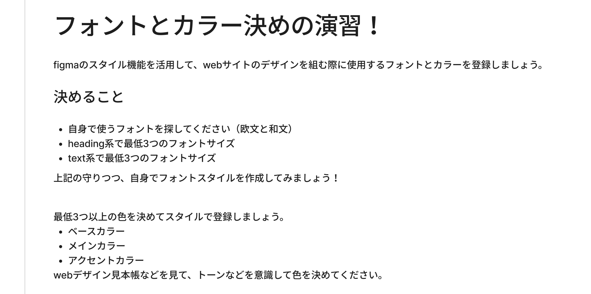
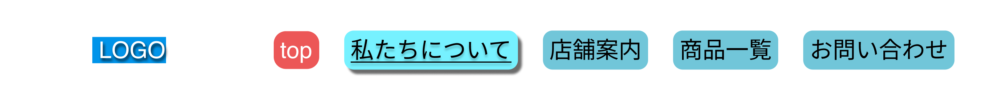
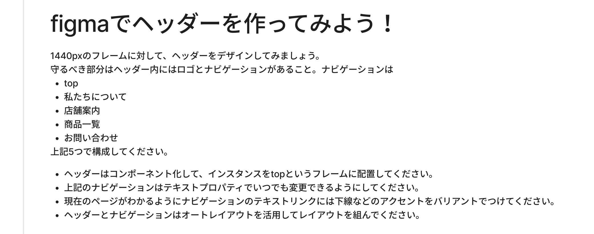

訓練校｜全6時間の集中授業
時刻をクリックすると、その内容の詳しい解説に飛べます。★★★＝特に重要。
枠を作るのも、要素を「親要素で囲う」のも全部フレーム。ショートカットは F。
スマホサイズを優先して先に作る。考えるのは「小さい幅」の方。
意図的なデザインでない限り、横スクロールは起こしてはいけない。
グループは中身ごと拡大縮小されて困る。だから整列に強いフレームを使う。
色・フォントを事前登録。後から一括で変えられる（=CSS変数のイメージ）。
サイズ感は数十本作らないと掴めない。まずトップページを作ってから登録する。
親＝コンポーネント／子＝インスタンス。親を変えると子に反映（逆はしない）。
文言や色は子（インスタンス）側で個別に上書きできる。
バリアント／テキスト／ブール値で、部品をぐっと使いやすくする。
余白と並びを自動化。hug（中身に合わせる）／fill（親に合わせる）がカギ。
この日の主役の一つが フレーム（Frame）。Figmaで枠を作るときも、要素をまとめて囲うときも、ほぼ全部このフレームを使う。先生のたとえがそのまま核心だった。
HTMLで div タグとかで囲っておくみたいなの、よくあったと思うんですね。子要素を div で親要素として囲う。あれをフィグマで視覚的に表現すると、フレームを使うイメージです。── A先生
F）を選ぶと、右パネルにデスクトップ・スマホ・タブレットなどの画面幅の一覧が出る。ここから選んで、まずページの大枠を作る。<!-- 記事カードの例：フレームは div の入れ子と同じ構造 --> <div class="card"> ← 外枠フレーム（親） <img> ← 子（サムネイル） <div class="desc"> ← 子をまとめたフレーム <p>タイトル</p> <p>本文</p> </div> </div>
| 操作 | やり方 |
|---|---|
| フレームを作る | ショートカット F → 右パネルから画面幅を選ぶ |
| 複製する | Option(Alt) を押しながらドラッグ |
| 選択範囲をフレーム化 | 右クリック →「選択範囲のフレーム化」（⌘+Option+G） |
| 名前をつける | フレーム化したらすぐ名前を変える（クラス名を考える感覚） |
トップPC / トップSP のように区別する（レイヤー名の重複を防ぐ）。ページ自体を分ける場合は SP を付けなくてもOK。
補足 先生は途中で「ショートカットはS」と言いかけたが、すぐ「フレームは F」と訂正。正しくはF。レイヤーのアイコンが シャープ(#)型になっていればフレーム、長方形ツールだとフレームにならないので注意。

スマホサイズのデザインから先に作っていくこと。今のWeb制作はPC幅とスマホ幅の2種類を作るのがスタンダードで、その出発点をスマホにする考え方。
2時間目の冒頭、生徒の質問から「フレームとグループの違い」を解説。結論：Webデザインのカンプを作るならほぼ100%フレーム。
これもケースバイケース。訓練校の制作では英語で統一している。理由は、最近は現場でAIにコーディングを任せる場面が多く、フレーム名をそのままクラス名にして指示できると英語の方が適切に伝わるから。分かりやすさ重視であえて日本語にする現場もある。
スタイル登録＝サイトで使う色・フォント・エフェクト・グリッドを事前にまとめて登録しておく機能。毎回フォントを探す手間が消え、後からの一括変更もできる。
＋（スタイルの作成）Heading1）。クラス名・CSS変数のイメージで命名する場所メモ このメニューは最初すごく見つけづらい。「どこにあるか」を必ずメモしておくこと。

コンポーネント（直訳＝部品）＝サイト内で繰り返し使うパーツを部品化する機能（教科書47p）。ヘッダー・フッター・ボタン・カードなど、複数ページで共通のデザインに使う。
実際にカンプに配置するのはインスタンス。親コンポーネントは大元なので、「コンポーネント置き場」フレームを用意してそこにまとめておく。現場では「トップページを作る → 繰り返すパーツをコンポーネント化 → 置き場に移動 → 複製したインスタンスを配置」という流れが多い。
| ステップ | 操作 |
|---|---|
| 1. テキスト | 「ボタン」と打つ（登録スタイル16px / Bold） |
| 2. オートレイアウト化 | Shift+A でフレーム化（=ボタンの土台） |
| 3. 装飾 | フレームに塗り・パディング（左右16/上下8）・角丸8px |
| 4. コンポーネント化 | ⌘+Option+K。枠が紫＆アイコンが4分割の◇型になる |
| 5. インスタンス | 複製するか、左パネル「アセット」からドラッグ＆ドロップ |
見分け方 レイヤーパネルで、インスタンスは中が抜けた◇型のアイコン。「レイヤーパネルから目を離さない」が先生の口ぐせ。
親の色を変えると全インスタンスに反映される。でも例えばボタンに「ボタン」というカタカナをそのまま並べることはない。そこでインスタンス側でテキストだけを上書き（例：「申し込む」）。
コンポーネントには色・サイズの反映だけでなく、コンポーネントプロパティという機能を足せる（教科書48〜49p。旧「バリアント」は今は49pのコンポーネントプロパティに統合）。主に使うのは バリアント／テキスト／ブール値 の3つ。
1つのコンポーネントの中に、状態違い（ホバー前・ホバー中・押せない＝ディセーブル など）のパターンを持たせる機能。インスタンス側で右パネルのトグルから切り替えられる。

＋ →「バリアント」＋ でパターンを追加（例：バリアント2＝ホバー、バリアント3＝ディセーブル）し、それぞれデザインを変えるインスタンスのテキストを右パネルから簡単に書き換えられるようにする機能（教科書49p）。地味だけど、先生いわく「個人的にすごく大事」。
＋ →「テキスト」これをやっておくと、複雑なコンポーネントでもレイヤーを深く潜らずに右パネルで一発でテキスト変更できる。中身をダブルクリックで掘っていく手間（＝検証ミスや作業時間の増加）が減る。
ブール値（Boolean）＝True / False を返すもの。Figmaではレイヤーの表示・非表示をワンクリックで切り替える機能になる（教科書49p）。
＋ →「ブール値」→ 名前（例：セール）本日のラスト＆最重要（教科書50p）。余白（マージン/パディング）を自動で保持し、要素の並びも自動でレイアウトしてくれるプロパティ。Figmaでボックスモデルを実現するイメージ。ボタン・カード・グローバルナビ・テーブルなど幅広く使う。
Shift+A で囲う。普通のフレームより「並べるのが得意」なフレーム、と考えればOK。
| Figma | CSS（Flexbox）での対応 |
|---|---|
| 水平に並べる | flex-direction: row（横並び） |
| 垂直に並べる | flex-direction: column（縦並び） |
| 間隔を数字で指定 | gap（要素間の余白＝margin） |
| 間隔を「自動」 | justify-content: space-between |
| パディング（上下/左右） | padding（内側の余白） |
| 中の位置（中央揃え等） | align-items / justify-content |
/* オートレイアウトで作ったナビを CSS にするとこんなイメージ */ .nav { display: flex; /* 水平 */ justify-content: space-between; /* 間隔=自動 */ gap: 80px; /* 要素の間隔 */ padding: 0 32px; /* 左右パディング */ }
width: fit-content の感覚width: 100% の感覚つまずきポイント 「コンテナに合わせて拡大」は、親がオートレイアウトになっていないと選べない（先生も授業中ここで一瞬詰まった）。固定幅のままだと親を伸ばしても子が広がらない。
ピンと来ない人は、オートレイアウトなしでこれを作ってみてください。めっちゃ面倒くさいです。「なるほど、面倒だな」と気づいてもらえると思います。── A先生
この日学んだ全部（フレーム・コンポーネント・バリアント・テキストプロパティ・オートレイアウト）を使う総合課題。

トップ というフレームに配置| 用語 | 意味（このクラスでの理解） |
|---|---|
| フレーム | 枠を作る／要素を親要素で囲う、Figmaの中心機能。HTMLの div。ショートカット F |
| グループ | 中身を1つにまとめる。拡大すると中身も拡大。Webカンプではほぼ使わない |
| モバイルファースト | スマホサイズから先に作る考え方 |
| 375px | 普及スマホで最小クラスの幅（iPhone SE等）。横スクロール回避の基準 |
| 1440px | PCデザインの基本の横幅。「最初はこれでいい」 |
| スタイル登録 | 色・フォント・エフェクト・グリッドを事前登録し一括管理する機能 |
| バリアブル（CSS変数） | スタイルと並ぶ登録方法。今回は使わず「スタイル」で登録するのが約束 |
| グリッド／カラム | レイアウトの基準ガイド線。Webは「列」一択。12カラムが目安 |
| フレームワーク | Tailwind等のコーディングルール集。カラム数が基準になる |
| コンポーネント／インスタンス | 親＝部品の大元／子＝配置する複製。親→子に反映、子→親は反映なし |
| コンポーネントプロパティ | 部品に機能を足す仕組み。バリアント/テキスト/ブール値の3つを主に使う |
| バリアント | 1部品内の状態違い（ホバー/ディセーブル/現在ページ 等） |
| テキストプロパティ | インスタンスの文字を右パネルから簡単に書き換える設定 |
| ブール値（Boolean） | True/False＝レイヤーの表示/非表示の切り替え |
| オートレイアウト | 余白と並びを自動化するフレーム。Shift+A。CSSのFlexbox |
| hug（コンテンツを内包） | 中身の大きさにフレームを合わせる。fit-content |
| fill（コンテナに合わせて拡大） | 親の幅に子を合わせる。width:100%。親がオートレイアウト必須 |
| キー | 機能 |
|---|---|
F | フレームツール |
Shift + A | オートレイアウト化 |
⌘ + Option + K（Ctrl+Alt+K） | コンポーネント化 |
⌘ + Option + G（Alt+G） | 選択範囲のフレーム化 |
Option(Alt) + ドラッグ | 複製 |
授業中に出た演習＝そのまま復習課題。間に合わなかったものは隙間時間で。
トップPC/サービスSP のように命名）※ 明日・明後日が（チャンネルの）投稿日、という先生の連絡もありました。
大事なのは、我々がデザイナー目線になること。考えるのは小さい幅の方です。── モバイルファーストの核心
最初に大体どんぐらいのフォントサイズにするか…って言われてもピンとこないじゃないですか。それは絶対しょうがない。みんな最初はそうなる。まずはトップページをしっかり作ってから、使ったフォントを登録すればいい。── スタイル登録の現実的な進め方
極論、コンポーネントが使えなくてもカンプは作れます。でも管理・編集・一括変更…効率を考えると、絶対に使っていくことになります。── 便利機能との付き合い方
ピンと来ない人は、オートレイアウトなしで作ってみてください。めっちゃ面倒くさいと気づけます。── オートレイアウトのありがたみ